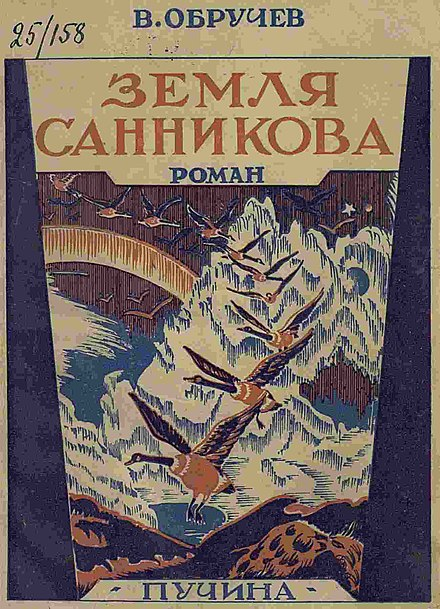
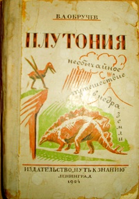
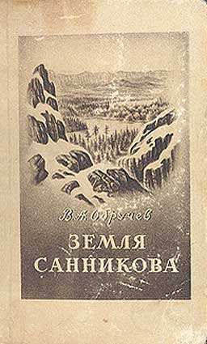

Земля Санникова (роман)
«Земля Санникова» — научно-фантастический роман В. А. Обручева, написанный около 1924 года, впервые опубликован в 1926 году. Сделался классикой детской литературы, постоянно переиздаётся, переводился на ряд европейских и азиатских языков.
Действие разворачивается в начале XX века, до русско-японской войны. Основу сюжета составляет путешествие трёх ссыльных студентов, казака и якута-проводника на Землю Санникова (по версии Обручева, располагавшуюся к северу от Новосибирских островов). Русские обнаруживают на Земле Санникова «оазис» посреди полярных льдов — кальдеру потухшего вулкана, — и живущее там затерянное племя онкилонов, пришедшее с материка за 424 года до того.
Исследователи поселяются среди оленеводов и даже выбирают себе жён. Онкилоны ведут войну с дикарями (неандертальцами или эректусами), которых называют «вампу», и русские учёные могут наблюдать образцы ископаемой флоры и фауны, изучать древних людей. Однако после полугода пребывания русских происходит сильное землетрясение, из-за которого вулканическая «грелка» перестаёт отапливать полярный оазис, а наводнение полностью уничтожает онкилонов и вампу. Один из исследователей погиб в землетрясении, провалившись в вулканическую трещину вместе со всеми научными образцами, записями и фотографиями. Четверо оставшихся путников и онкилонская жена одного из них вернулись в Якутию с надеждой отправить в будущем экспедицию для отыскания остатков погибшей Земли Санникова.

Минувшие эпохи в развитии животного мира Земли и древних народов изображались В. Обручевым с художественной зримостью, познавательный материал вплетён в увлекательный сюжет. Критики отмечали, что академик Обручев выступил также как мастер литературного пейзажа, сочетая аналитическую наблюдательность естествоиспытателя с поэтическим восприятием художника[1]. Роман вызвал большой интерес широкой публики, спровоцировав в 1930—1950-е годы своего рода географический и геологический «бум» в Советском Союзе. Сам академик Обручев не сомневался в существовании Земли Санникова в недалёком прошлом, считая её ледяным или вулканическим островом, что отражено в его публикациях, предназначенных для широкой публики.
Действие романа разворачивается в 1904 году. Повествование начинается с заседания Русского географического общества, посвящённого поискам пропавшего барона Толля. Докладчик завершил своё выступление утверждением, что Земля Санникова — миф, жертва исследователя была напрасной. Неожиданно его прервал один из присутствующих восклицанием: «А всё-таки она существует!» Организатор и консультант экспедиции академик Шенк в перерыве просит смутьяна пояснить свою позицию. Это оказался молодой политический ссыльный Матвей Горюнов, который уже пять лет обитал в селе Казачьем в устье Яны. В ссылке он встречал людей, которые «ясно видели Землю Санникова и твёрдо убеждены в её существовании». Молодой человек принялся страстно убеждать Шенка в своей правоте: «в силу каких-то особых условий Земля Санникова, несмотря на своё северное положение среди льдов полярного океана», обладает более тёплым климатом. Это мог быть горячий вулкан, согревающий почву, или горячие ключи. Подтверждением тому стало странное исчезновение «целого народа онкилонов, жившего на Севере». После заседания Шенк поднял научную литературу и пришёл к выводу, что предприятие Горюнова — поиск Земли Санникова — может увенчаться успехом. Шенк выдал студенту две с половиной тысячи рублей на закупку в Петербурге необходимого снаряжения и передал из Академии наук научные приборы. В команду Горюнов решил включить своих товарищей-ссыльных: Семёна Ордина и Павла Костякова.
К написанию научно-популярных, а затем и литературных текстов В. А. Обручев обратился после 1912 года, когда вынужденно оказался на пенсии и располагал свободным временем. Во время Первой мировой войны он создал приключенческий роман «Плутония». Непосредственным поводом к работе над романом было желание исправить геологические ошибки, допущенные популярными в среде молодёжи авторами. Во время пребывания на даче Обручев взялся перечитать «Путешествие к центру Земли» Жюля Верна; этот роман он любил с детства и читал его в оригинале. Так появился замысел «Плутонии». Литературовед М. П. Одесский (РГГУ) утверждал, что датировка романа 1915 годом, основываясь только на утверждениях автора, ошибочна. Обручев сознательно мистифицировал современников, поскольку роман являлся реакцией на события Гражданской, а не мировой войны.

В первой же главе «Земли Санникова» В. А. Обручев описывал слушание в Императорском Русском географическом обществе доклада экспедиции, «снаряженной для поисков пропавшего без вести Толля и его спутников» из уст неназванного «морского офицера, совершившего смелое плавание в вельботе через Ледовитое море с Новосибирских островов на остров Беннетта, на который высадился барон Толль, оттуда не вернувшийся»; упоминается «мужественное лицо докладчика, обветренное полярными непогодами». Этому описанию полностью соответствует Александр Васильевич Колчак, который к моменту издания книги уже несколько лет как был расстрелян большевиками и которого открыто в советской печати назвать автор не мог.
В части источников указывалось, что основная работа над романом «Земля Санникова» проходила в 1922—1924 годах[24]. По воспоминаниям самого Обручева, во время отпуска на Кавказе в 1924 году он вспоминал воздушные ванны, которые принимал в 1915 году, когда обдумывал «Плутонию», и «захотел заняться подобной же работой, так как какую-нибудь научную статью в дачных условиях нельзя было выполнить. Тема у меня была уже намечена»[25]. Побудительным толчком к написанию «Земли Санникова» было прочтение романа чешского фантаста Карла Глоуха «Заколдованная земля», русский перевод которого вышел в 1923 году.
В этой книге описано путешествие изобретателя Алексея Сомова в центр Гренландии, где он обнаружил тёплый оазис с мамонтами и первобытными людьми. Профессионального геолога возмущало обилие научных ляпов, например, что стационарный внутриконтинентальный оазис не может существовать в Гренландии, ледники которой «стекают» в окружающие остров моря.
Проблема древнего оледенения Сибири и Центральной Азии была научной проблемой, которая постоянно занимала Обручева в это время. Эти интересы можно было легко соединить с поисками легендарной Земли Санникова, историей которой геолог также увлекался. После 1916 года Обручев на постоянной основе стал сотрудничать с редакцией журнала «Природа», в котором поместил множество материалов о вулканизме в Европе и Африке, которые были использованы при написании романов. Первое издание под названием «Земля Санникова, или Последние онкилоны» последовало в 1926 году в издательстве «Пучина»
Роман по замыслу примыкал к географической фантастике жюльверновского типа. Правдоподобие описаниям придавало реальное геологическое строение островов полярного бассейна, в первую очередь Исландии: Земля Санникова была сделана Обручевым потухшим вулканом, чьё тепло сохраняло реликтовый мир, дошедший в неизменности от ледниковой эпохи. На эпоху создания романа (накануне и сразу после Октябрьской революции) указывало и то, что Земля Санникова — страна, не испорченная цивилизацией, в которой учёный может заниматься своим делом без бюрократии и полицейского надзора. По предположению А. Бритикова, Обручев в фигуре академика Шенка вывел в первую очередь себя самого.
Биографы отмечали, что первые издания романа, пришедшиеся на годы первых пятилеток, вызвали большой резонанс, многие подростки искренне верили в существование описанной Обручевым страны, просили принять в готовящуюся экспедицию. Когда просьбы переставали поступать, учёный огорчался. В статье для журнала «Детская литература» В. Обручев утверждал, что «хороший научно-фантастический роман даёт большее или меньшее количество знаний в увлекательной форме». Географ Э. Мурзаев отмечал, что примечательной особенностью творчества Обручева является теснейшая взаимосвязь науки и художественной литературы, плавно перетекающей одна в другую. Это касается и места, где происходит действие, и богатого познавательного материала. Обручев стремился формировать вкусы и интересы молодёжи начиная со школьного возраста, на что обращали внимание его младшие современники
На рубеже XIX—XX веков В. А. Обручев работал на севере Якутии и глубоко заинтересовался научным обоснованием существования Земли Санникова. Выдвинутую гипотезу он положил в основу научно-приключенческого романа, обосновав её в послесловии. Выдвинутые тогда тезисы В. Обручев последовательно доказывал в публикациях 1930—1940-х годов. Объёмную сводку своей аргументации он привёл в статье для журнала «Природа», увидевшей свет в 1935 году. Поводом для возвращения к гипотезе стало открытие Острова Ушакова во время экспедиции на ледоколе «Садко», что делало существование острова в 150—200 км севернее Новосибирских островов более вероятным[39]. По мере появления новых данных об Арктике, менялось и содержание послесловия
В своей статье Обручев напоминал об истории вопроса: впервые о Земле Санникова как об отдельном массиве суши сообщил в 1810 году добывавший песцов и мамонтовую кость на северных берегах Новосибирских островов купец-зверопромышленник Яков Санников, ранее открывший острова Столбовой (1800) и Фаддеевский (1805). По словам охотника, над морем поднимались «высокие каменные горы», расстояние до которых было определено примерно в 70 вёрст от острова Котельный. Безуспешную попытку добраться до них предпринял Матвей Геденштром. В 1821—1822 годах лейтенант Анжу, участник полярной экспедиции барона Врангеля, также докладывал о попытке дойти до земли, виденной Санниковым и Геденштромом, однако крайне изломанные льды и обширные разводья делали предприятие невозможным. После открытий островов Де-Лонга во время экспедиции на «Жаннетте[en]», секретарь Русского Географического общества А. В. Григорьев предположил, что существование острова западнее новооткрытых вполне вероятно. Не сомневался в существовании Земли Санникова Э. В. Толль, якобы, наблюдавший её в августе 1886 года. Однако наблюдения Нансена в 1893 году и самого Толля во время Русской полярной экспедиции в 1901 году не позволили обнаружить никакой суши, хотя измерения морских глубин свидетельствовали о продолжении континентального шельфа на север
Исследования поэтики прозы В. А. Обручева немногочисленны и фрагментарны. В статье кандидата филологических наук В. П. Булычевой (Астраханский университет) со ссылкой на А. Ф. Бритикова утверждается, что исторически научная фантастика развивалась из приключенческой литературы со всеми присущими ей особенностями: динамизмом сюжета, низком психологизме героев и сдержанности в использовании традиционных средств литературной выразительности, в частности тропов при обилии деталей и технических подробностей в описаниях предметов и явлений; значительной ролью эффекта правдоподобности, созданию которой авторы этого времени уделяли большое внимание. Исследовательница, поместив «Землю Санникова» в контекст произведений того времени (включая романы и повести А. Грина, А. Толстого, А. Беляева, М. Булгакова), отмечает, что для приключенческой фантастики первых десятилетий XX века не существовало ни единообразного способа объяснения фантастических явлений, ни единой поэтики, исходя из которой описывались бы социальные явления, ни подобного же литературного шаблона для описания внутренних переживаний героя.
Выясняется, что в романе «Земля Санникова» практически не выражена нравственная проблематика, отсутствует социальная критика, практически не выявлена идеологическая позиция. При этом текст фиксирован на историческом прошлом. Сюжет строится как травелог, и повествование перенасыщено конкретной научной информацией, но не исключает мистических совпадений (прибытие героев совпадает с катастрофой, предсказанной туземным шаманом). Основной конфликт романа основан на несовместимости первобытного и современного научного мировоззрения. В романе существует романтическая линия, но она второстепенна и описана крайне скупо; практически нет описаний переживаний главных героев. Отсутствуют чётко выраженные протагонист и антагонист[51]. Упоминания о магии не означают наличия в романе элементов фэнтези, хотя становление данного жанра происходило как раз во время создания «Земли Санникова». Вера в колдовство служит описанию суеверности мышления онкилонов и противоречит рациональному посылу произведения[52].
В кандидатской диссертации Д. И. Старцева, посвящённой творчеству А. Р. Беляева в русской фантастической прозе, утверждается, что Обручев, скорее, ориентировался на просветительскую традицию К. Циолковского. Сюжет «Земли Санникова» одновременно построен на мифе и научном допущении, его автор синтезировал элементы приключенческого, научно-фантастического, реалистического жанров, широко используя достижения западноевропейской литературы. Британский критик Доминик Эслер также проводил параллели между художественными задачами Циолковского и Обручева, которые стремились использовать литературу только как средство придать занимательность научной информации, хотя Владимир Афанасьевич обозначен как «имеющий претензии на литературность»
Литературовед М. П. Одесский утверждал, что учёный Обручев действовал в рамках мифа о Гиперборее и затерянных мирах, восходящего к топике Серебряного века, что особенно проявилось в романе «Плутония». Мифологический контекст творчества учёного последовательно рассматривала Сюзанна Франк (профессор славистики университета Гумбольта в Берлине). С её точки зрения, Обручев в романе «Земля Санникова» ставил перед собой противоположную задачу: показать Арктику как своего рода «анти-преисподнюю», которая может быть включена в советское социокультурное пространство. В этом плане его роман полностью укладывался в шаблон научной фантастики 1920-х годов, которая должна была не просто популяризовать научные открытия и просвещать народные массы, но и воодушевлять самих учёных. Владимир Афанасьевич при этом избегал связи с политическими установками и подчёркивал ценность дореволюционного опыта и знаний. Впрочем, Д. Эслер отмечал, что Обручев почти ничего не сделал, чтобы обыграть реалии царской России в своих романах.
Сюзанна Франк рассматривает роман «Земля Санникова» в контексте утопий, то есть повествований об идеальном месте или острове, который отделён от цивилизованного мира непреодолимыми препятствиями, в данном случае — арктическими льдами. Очевидна и отсылка к мифу о Гиперборее и Атлантиде[59]. Исследователь выделяет несколько произведений, которые генетически были связаны с романом «Земля Санникова» и предшествовали ему. В первую очередь это были «Путешествие и приключения капитана Гаттераса» Жюля Верна, роман, который Обручев ценил с юности и читал когда-то в оригинале. Однако капитан-завоеватель, обнаружив вершину мира — тёплый остров на Северном полюсе, не обнаружил там людей. Полемизируя с романом Й. Глоуха, Обручев воспользовался его сюжетом, но дополнил рассказ об арктическом оазисе катастрофой, которая сделала произведение «более реалистичным и одновременно более фантасмагоричным». По мнению С. Франк, наиболее важным ориентиром для Обручева явилось произведение эпохи романтизма, а именно «Учёное путешествие на Медвежий остров» О. Сенковского. Стратегии писателей противоположны: Сенковский, описывая допотопный арктический рай, высмеивает науку, тогда как Обручев одинаково серьёзно воспринимает позитивное знание и древнюю мифологию. Роман демонстрирует, что с помощью науки любая фантастическая идея может превратиться в достойную внимания гипотезу.
В «Земле Санникова» отсутствует приём остранения, описанная в романе экспедиция и открытие острова предстают как непосредственные события, имевшие место в недалёком прошлом. С точки зрения науки, повествование построено как верификация научной гипотезы, основанной на наблюдениях, ныне передаваемых исключительно устной традицией. К традиции отсылают элементы мифологии: тёплый остров за арктическими льдами и счастливые люди, живущие там, являются элементами истории о гиперборейцах, а библейская традиция явно выступает в названиях глав, например: «На пороге обетованной земли». Гибель острова в финале — явная отсылка к мифу об Атлантиде. При этом персонажи романа отвергают мифы, занимаясь эмпирическим познанием. В отличие от сказочной Гипербореи, плодородие и климат Земли Санникова основаны на вулканической деятельности, то есть изначально нестабильны.
Горюнов констатирует, что гибель острова — это не эпическая катастрофа, а достаточно рядовое, хотя и огромное по последствиям, природное явление, причины которого очевидны для учёного. Онкилоны, напротив, скованы низким уровнем цивилизации и мифологического сознания, считают шамана всеведущим. Вместо того, чтобы прислушаться к русским, они устраивают жертвоприношения духам земли и обвиняют Горюнова и компанию, что те осушили священное озеро. В известной мере Обручев пользовался и приёмами, характерными для сказки: вернувшись из путешествия в иной мир, герой должен забыть его. Вместе с погибшей Землёй Санникова потеряны и все научные материалы, доказывающие существование острова и его обитателей. С одной стороны, остров опять уходит в пространство легенды, с другой, благодаря успешному возвращению героев аннулируется дихотомия двух миров. По мнению С. Франк, Владимир Обручев сознательно выкорчёвывал утопию из своего романа, делая остров составной частью познаваемого мира вообще, и России, в частности
Уже первое издание романа 1926 года (под названием «Земля Санникова, или Последние онкилоны») не осталось незамеченным литературной критикой. В обзоре журнала «Сибирские огни» подчёркивались научные регалии и 40-летний опыт работы автора, а выход романа в свет именовался «неожиданным», «потребностью отдыха… после напряжённой научной работы». Критик К. Козьмина не упоминала о литературных достоинствах текста, сообщив лишь, что роман читается легко, демонстрирует выдающуюся эрудицию автора и является «ценным вкладом в научно-художественную беллетристику, особенно для юных читателей»
В 1935 году редакция научно-популярной и юношеской литературы ОНТИ предприняла новое иллюстрированное издание романа двухсоттысячным тиражом (дополнительный тираж в 50 000 экземпляров последовал в 1936 году). Издание было снабжено новым авторским послесловием, картами и небольшим библиографическим указателем. Рецензент — С. Шорыгин — хвалил занимательность сюжета и живость описаний геологических и палеонтологических явлений и существ, именно в них заключается основная ценность романа. Критик в духе своего времени рассуждал о «правильном» противопоставлении культуры онкилонов и туземного населения Земли Санникова, но тут же оговаривался, что роман написан до революции, поэтому использует неверные схемы истории культуры. «Явно сгущая краски, он изображает дикарей почти совершенно звероподобными», это названо «существенным недочётом романа»[45]. Примерно такие же замечания были сделаны тем же рецензентом в декабрьском выпуске журнала «Наука и жизнь» за 1936 год: «Предполагать, что Земля Санникова представляет собой кратер полупотухшего вулкана, населённый людьми, мы не имеем никаких оснований; это допущение понадобилось автору опять-таки для того, чтобы сделать роман более занимательным»
Как учёный, Обручев в своём романе свободно комбинировал геологическую и антропологическую перспективы. Геология служила ему для демонстрации эволюции человечества. Исходя из геологического учения о вулканизме, о возникновении и исчезновении островов в Арктике в результате вулканической деятельности, Обручев обосновывал гипотезу о тёплых арктических районах. Как невозможно принципиально отграничить остров от материка, так и его обитатели — онкилоны — предстают читателю через сравнение с народами Сибири и русскими. Онкилоны не превосходят пришельцев (как мифические атланты или гиперборейцы), напротив, оказываются у них в своего рода полуподчинении, завися от огнестрельного оружия и стальных топоров могущественных белых. Во время геологической катастрофы не только гибнут все онкилоны (кроме Аннуир), но и один из русских. Это показано как действие безличных законов эволюции. Однако, по мнению С. Франк, Обручев использовал для описания антропологической эволюции метод бинарных оппозиций. Руководителю экспедиции — Горюнову — соответствует двойник — обруселый якут Горохов, на что указывает перекличка имён.
Оба они, как носители русского языка и культуры, находятся на вершине цивилизационного развития, но в остальном полностью противоположны, особенно в отношении к мифологическому сознанию. Горюнов замечает у онкилонов только безграмотность примитивных туземцев, учит их строить дома (онкилоны отвергают новомодные способы), демонстрирует превосходство своего оружия. Горохов, владея чукотским языком, смотрит на онкилонов с уважением и пониманием, и считает, что в их стране гораздо лучше жить, чем в Якутии. Однако Горохов превосходит Горюнова в просвещённом скептицизме, и не верит в реальность Земли Санникова, даже оказавшись в буквальном смысле на её пороге. В финале он оказывается правым: остров исчез, так и оставшись марью, миражом. Онкилоны не могут избежать своей судьбы из пророчества шамана (все беды начнутся после прихода белых людей), и это пророчество не опровергается ходом событий, хотя и лежит вне причинно-следственных связей. Финал романа находится в пределах мифа: число вернувшихся путников такое же, сколько их отправлялось на Землю Санникова. На место погибшего по случайности Костякова встаёт Аннуир; иными словами, произошёл ритуальный обмен, место одного из русских занимает последняя представительница погибших онкилонов. С. Франк трактует её образ как своего рода прародительницу, оставленную в среде более прогрессивного и сильного народа
Уже первое издание романа 1926 года (под названием «Земля Санникова, или Последние онкилоны») не осталось незамеченным литературной критикой. В обзоре журнала «Сибирские огни» подчёркивались научные регалии и 40-летний опыт работы автора, а выход романа в свет именовался «неожиданным», «потребностью отдыха… после напряжённой научной работы». Критик К. Козьмина не упоминала о литературных достоинствах текста, сообщив лишь, что роман читается легко, демонстрирует выдающуюся эрудицию автора и является «ценным вкладом в научно-художественную беллетристику, особенно для юных читателей»
В 1935 году редакция научно-популярной и юношеской литературы ОНТИ предприняла новое иллюстрированное издание романа двухсоттысячным тиражом (дополнительный тираж в 50 000 экземпляров последовал в 1936 году).
Издание было снабжено новым авторским послесловием, картами и небольшим библиографическим указателем. Рецензент — С. Шорыгин — хвалил занимательность сюжета и живость описаний геологических и палеонтологических явлений и существ, именно в них заключается основная ценность романа.
Критик в духе своего времени рассуждал о «правильном» противопоставлении культуры онкилонов и туземного населения Земли Санникова, но тут же оговаривался, что роман написан до революции, поэтому использует неверные схемы истории культуры.
«Явно сгущая краски, он изображает дикарей почти совершенно звероподобными», это названо «существенным недочётом романа»
Примерно такие же замечания были сделаны тем же рецензентом в декабрьском выпуске журнала «Наука и жизнь» за 1936 год: «Предполагать, что Земля Санникова представляет собой кратер полупотухшего вулкана, населённый людьми, мы не имеем никаких оснований; это допущение понадобилось автору опять-таки для того, чтобы сделать роман более занимательным»
В рецензии В. Сытина также утверждалось, что роман в первый раз был издан до революции.
